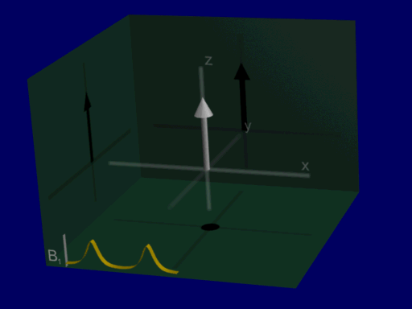
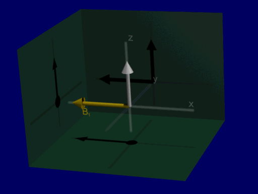
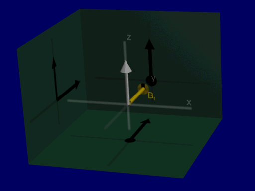

Fun? RF Pulses?
Contents
Fun? RF Pulses?¶
Yes, you heard me right. Maybe it takes a special type of person, but I think RF pulses can be fun! Check out some interesting examples below.
Movies created with SpinBench https://heartvista.ai/spinbench
Adiabatic Pulses¶
Adiabatic pulses are a class of pulses that are basically insensitive to \(B_1^+(\vec{x})\) field inhomongeneities. In other words, they perform similarly even if there is variation in the amplitude of the magnetic field created by the RF transmit coil.
These are mostly effective for 180-degree flip angles, for purposes of inversion or spin-echoes (although typically 2 adiabatic 180-degree pulses are required for refocusing unwanted phase when used as a spin-echo).
The example below shows a simulation of two 180-degree inversion adiabatic pulses. This movie shows how these pulses “sweep” the magnetization from the +z axis to the -z axis, and then back again with the second 180-degree pulse.

Yellow - B1 (RF) vector
White - net magnetizations for a range of frequencies around the Larmor frequency
The amplitude of the adiabatic pulses is plotted in the bottom left corner
Pretty Pictures¶
These two examples apply continuous RF pulse (also called a constant amplitude or hard pulse), and show the resulting net magnetization for a range of off-resonance frequnecies around the Larmor frequency. Here, the off-resonance changes the angle of rotation.
One movie is the RF applied along the x-direction, the other RF is applied along the y-direction.

